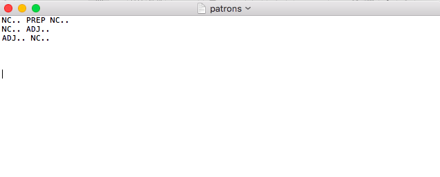
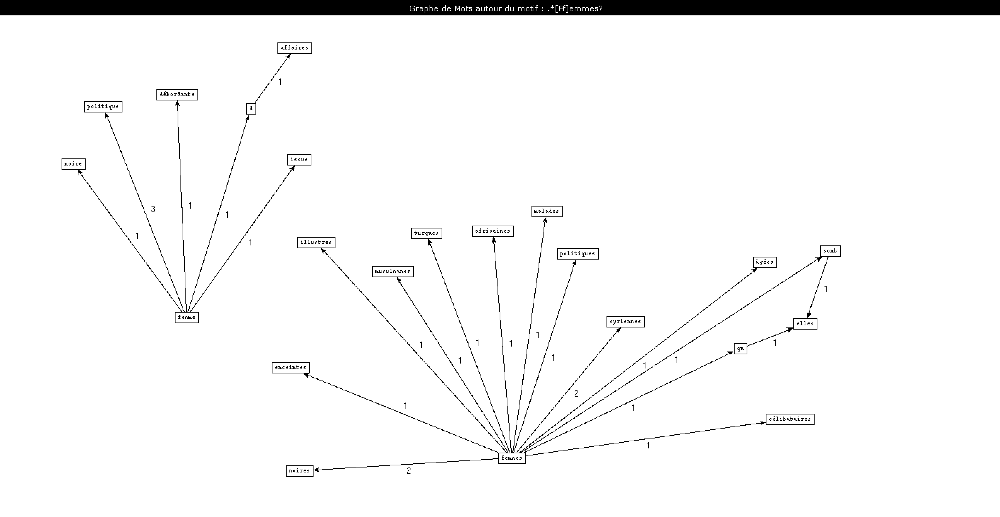
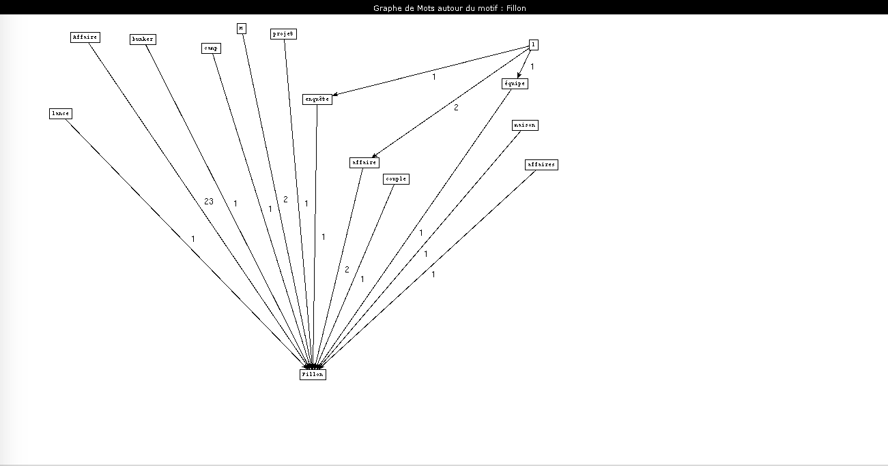
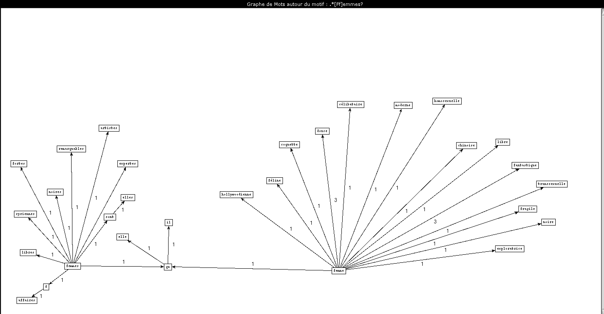

Voici la page de mon travail pour la matière Projet encadré .
Le but de ce projet est de créer des boîtes à outils permettant d'effectuer des patrons morphosyntaxiques.
Le schéma ci-dessous, a été créé par ma collègue Milena afin d'avoir une représentation visuelle du projet.

BAO 1
La Boîte à outil n°1 permet de parcourir les rubriques de chacune des archives du Monde afin de récupérer les titres et les descriptions de chaque article et les mettre dans 2 fichiers :
un fichier texte et un fichier xml.
Les données récupérées sont également nettoyer dans cette boîte à outil.
Nous observerons les résultats dans la boîte à outil n°2 qui possède un sous-programme d'étiquetage supplémentaire.
BAO 2
La Boîte à outil n°2 effectue la même action que la Boîte à outils n°1 mais possède une étape supplémentaire qui est l'étiquetage des titres et descriptions.
BAO 3
La Boîte à outils n°3 permet d'extraire des patrons morphosyntaxiques dans les étiquetages produit avec Cordial.
Plusieurs possibilités seront présentées :
1) une solution perl qui prend en argument le fichier texte des patrons
2) une solution avec l'aide de recommandation XSLT
3) une solution avec l'aide de recommandation XQUERY
4) une deuxième solution avec perl et qui utilise Treetagger
1 ère solution :
Pour cette solution, il faut dans un premier temps, passer les fichiers étiquetés, obtenus avec la BAO 2, dans le logiciel Cordial.
Le programme va parcourir le fichier ligne par ligne et va mettre dans 3 listes différentes le contenu de chacune des colonnes du fichier Cordial.
On a également besoin d'un fichier texte avec les patrons morphosyntaxiques comme ci-dessous.
Pour passer les fichiers dans Cordial, il faut modifier l'encodage de nos fichiers en ISO-8859-1.
Pour cela, nous utilisons la commande iconv -f UTF-8 -t iso-8859-1 3236.txt > fichier.txt.

La commande est donc : perl BAO3.pl fichier_cordial fichier_txt_patrons.
2e solution :
La deuxième solution était un exercice à effectuer dans une autre matière qui se nomme Document Structuré.
Cette solution est effectuée avec le langage XML et des recommandations XSLT et XPATH.
Nous avons trois feuilles de style xslt :
La première permet d'extraire le patron morphosyntaxique NOM ADJ
Résultat
La deuxième permet d'extraire le patron morphosyntaxique NUM NOM VER PUN
Résultat
La troisième permet d'extraire le patron morphosyntaxique NOM VER ADJ
Résultat
3e solution :
Cette troisième solution propose des recommandations XQUERY pour extraire les patrons morphosyntaxiques "NOM ADJ" et "NOM PRP NOM".
<Ci-dessous la recommandation pour le patron morphosyntaxique "NOM ADJ"
Résultat
Ci-dessous la recommandation pour le patron morphosyntaxique "NOM PRP NOM"
Résultat
DIFFICULTÉ : se faire voler son ordinateur
Je me retrouve à cette étape du projet sans ordinateur et avec toutes mes données perdues ainsi que mes programmes.
Mes rubriques seront donc différentes à partir de maintenant car, sans ordinateur,
mes collègues ont fait fonctionner leurs programmes sur les rubriques qu'elles pouvaient.
La deuxième partie de la Boîte à outils n°3 ainsi que la Boîte à outils n°4 ne s'effectueront pas avec les mêmes rubriques.
Les nouvelles rubriques que j'utiliseraient seront :
- La rubrique 823353 qui est la rubrique Politique
- La rubrique 3208 qui est la rubrique À la Une
- La rubrique 3246 qui est la rubrique Culture
Suite BAO3
Le deuxième solution perl pour extraire des patrons morphosyntaxiques utilise les données extraites avec TreeTagger.
La grande différence que ce script possède par rapport au premier que l'on a pu observer plus haut
est que les données entrantes sont placées dans un tableau et sont ensuite analysées par notre programme puis extraite du tableau.
Nous possédons alors deux scripts pour cette solution : un pour chaque patron.
PATRON NOM ADJECTIF
Résultats
Rubrique À la Une
Rubrique Politique
Rubrique Culture
PATRON NOM PRÉPOSITION NOM
Résultats
Rubrique À la Une
Rubrique Politique
Rubrique Culture
J'ai effectué d'autres patrons pour chaque rubrique qui reprennent soit l'une ou l'autre des deux solutions utilisant les programmes Perl. Voici leurs résultats.
Rubrique À la Une
Solution Perl Cordial
Patron ADJ NC
Patron NC NP
Patron NC PREP NP
Patron NC DETD NP
Patron NC NC
Patron NC NP
Patron NC V
Patron NC PREP NC
Patron NC ADJ
Solution Perl TreeTagger
Patron ADJ NC
Patron NAM VER
Patron NOM ADJ
Patron NOM DET NAM
Patron NOM NAM
Patron NOM NOM
Rubrique Culture
Solution Perl Cordial
Patron ADJ NC
Patron NC ADJ
Patron NC DETD NP
Patron NC NC
Patron NC NP
Patron NP V
Solution Perl TreeTagger
Patron ADJ NC
Patron NC ADJ
Patron NC DETD NP
Patron NC NC
Patron NC NP
Patron NP V
Rubrique Politique
Solution Perl Cordial
Patron ADJ NC
Patron NC ADJ
Patron NC DETD NP
Patron NC NC
Patron NC NP
Patron NP V
Solution Perl TreeTagger
Patron ADJ NC
Patron NC ADJ
Patron NC DETD NP
Patron NC NC
Patron NC NP
Patron NP V
Ces différents patrons nous servirons pour la Boîte à outil n°4. Ainsi, nous pourrons observer les différences de résultats obtenus.
BAO 4
La Boîte à outils n°4 va nous permettre de créer des graphes de cooccurrence avec l'aide d'un logiciel qui se nomme patron2graph.
Pour ce logiciel nous avons besoin de créer un fichier texte supplémentaire contenant le motif recherché.
La commande pour utiliser ce logiciel est : chemin-logiciel "encodage" fichier-patron motif.txt.
Les motifs que j'ai utilisé sont les mots :
"Femme", "Homme", "droite/gauche", "scandale/affaire/cas", "Macron", "Fillon".
Ces motifs ont été décidé avec mes collègues en observant les actualités les plus importantes de l'année 2017.
Le motif : Rubrique À la Une
Le motif [Ff]emmes?
Dans le patron NOM ADJ
 On peut observer que deux types d'adjectifs utilisés avec le nom "femme(s)".
On trouve des adjectifs concernant les origines de la femme ou un adjectif concernant sa situation ("agées", "célibataires"," enceintes").
Dans le patron NOM PREP NOM

On peut observer que la préposition la plus utilisée avec le mot "femme(s)" est la préposition "de".
On trouve alors des cooccurrences telles que "milliers/génération/dizaine de femme"
Observons maintenant la différence avec le motif "[Hh]ommes?"
Le motif [Hh]ommes?

On observe que les résultats sont plus nombreux quand le motif est "[Hh]ommes?".
La cooccurrence la plus importante est "affaire d'homme".
Les adjectifs que l'on retrouve le plus sont des adjectifs concernant le physique de l'homme ("fort", "charismatique").
Le motif (scandales?)|(affaires? )|(cas)|(.*gate/b)
Comparaison entre les deux sorties : Cordial et Treetagger

Avec la sortie Treetagger, seul les mots finissant par "gate", n'apparaissent pas.
Nous retrouvons une des plus grosses affaires de l'année avec le mot scandale.
Les données ne sont pas très nombreuses mais reflètent parfaitement les grands scandales et affaires de l'année 2017.
Le mot le plus récurrent dans le motif recherché pour la sortie cordial est le mot affaire . On observe que l'on trouve énormément de nom de personne liée à telle ou telle affaire.
Les données qui ont été récupérées avec Cordial sont plus importantes que les données récupérées avec Treetagger mais les cooccurrences trouvaient ne trouve pas les mots scandale et cas contrairement à la sortie Treetagger.
Le motif "Fillon"

Les cooccurrences du motif Fillon sont surtout accès sur L'affaire Fillon qui a marqué cette année 2017 et qui est le cooccurrent le plus fréquent du graphe. C'est ainsi que les coocurrents de "Fillon" sont des mots tels que "couple", "maison", "époux".
Le motif "Macron"

Les coocurrents associés avec le motif Macron nous permet d'obtenir un graphe très complet.
En effet, on retrouve tout ce qui permet de définir Emmanuel Macron dans sa manière de présider. Ce qui font de lui le président qu'il est.
Ainsi, on obtient "monarque", "président", "gouvernement", "proeuropéen" mais aussi "couple" qui met en valeur la dimension de couple présidentiel, qu'il met en avant.
Le motif : Rubrique Politique
Le motif [Ff]emmes?

Tout d'abord, ce graphe est extrait du patron NOM ADJ.
Dans la rubrique Politique, les cooccurrents les plus récurrents sont "femmes politiques" et "femmes noires".
On observe ainsi que dans la rubrique Politique, le mot "femme" est utilisé en décrivant sa couleur de peau plutôt que de sa fonction.
Avec le patron morphosyntaxique NOM PREP NOM, on observe que dans le rubrique Politique, les coocurrents les plus présents sont des coocurents qui concernent le couple. Les mots "homme" et "femme" sont utilisés ensemble ainsi que les mots "couple" et "femme".
On retrouve également, par 2 fois, la cooccurrence "femme en situation".
Le motif [Hh]ommes?

Contrairement au motif Femme, le motif Homme n'est pas associé au mot "femme". On trouve des cooccurrents qui permettent de mettre l'homme en valeur.
On trouve alors les cooccurrent "homme fort", "homme romanesque", "hommes jeunes".
Le cooccurrent le plus fréquent est "homme à affaires".
Le motif (scandales?)|(affaires? )|(cas)|(.*gate/b)

Comme pour la rubrique étudiée précédemment, on observe que la sortie Treetagger ne trouve que le mot "affaire" et ses cooccurrents.
Les deux affaires que l'on trouve le plus sont "affaire Grégory" et "affaire Fillon".
Le motif "Fillon"
 On retrouve les mêmes cooccurrences que dans la rubrique précédente concernant les affaires Fillon.
Grâce aux cooccurrences, on remarque que le fait que François Fillon est été candidat aux présidentielles 2017 n'a été que peu évoqué. Mais la cooccurrence "affaire Fillon" se retrouve plus de 20 fois dans la rubrique Politique.
Le motif "Macron"

Dans la rubrique Politique, les cooccurrents sont encore une fois représentatif de la présidence d'Emmanuel Macron
On retrouve des cooccurrents concernant son élection ("candidats","candidat",président"), sur ses relations internationales ("Poutine", "duo", "rencontre"), mais aussi sur sa façon de présider le pays ("méthode","ministre","Philippe", "réformes", "ordonnance").
Le motif "gauche/droite"

Le graphe sur les motifs gauche et droite est très intéréssant à analyser.
Vous pouvez observer sur la droite, toutes les cooccurrences du mot droite, sur la gauche toutes les cooccurrences du mot gauche et au centre toutes les cooccurrences concernant les deux motifs gauche et droite.
C'est le patron morphosyntaxique NOM VER qui a été utilisé afin d'observer les verbes les plus utilisés pour l'un ou l'autre des mots.
Pour la droite, on observe des verbes qui donnent une impression de grandes actions. La droite "hérite","construit","gagne", "consacre", "conforte".
Alors que la gauche, quand à elle, "occupe, "affirme", "revendique", "veut", "dénonce". Cela donne l'impression que la gauche utilise les mots et la droite les actions.
Les données concernant la droite sont également plus nombreuses.

Dans ce deuxième graphe concernant les mots droite et gauche est effectué à partir du patron morphosyntaxique NOM ADJ.
On peut voir sur le côté gauche du graphe que une des cooccurrences reflète le nombre de candidat par partis.
On peut voir deux coocurrences qui représente chacun des parties des présidentielles 2017. On observe la cooccurrence "droite macroniste" d'un côté et "gauche mélenchoniste" de l'autre.
On peut également que la cooccurrence "extrême droite" est présente 64 fois. Alors que la cooccurrence "extrême gauche" n'est présente qu'une fois dans la rubrique Politique.
Le motif : Rubrique Culture
Le motif [Ff]emmes?
 Pour le patron morphosyntaxique NOM ADJ, on observe que le mot femme, dans la rubrique culture, est encore utilisé avec des mots tels que "douce", "coquette", "fragile", ou encore "féline".
Les cooccurrences les plus utilisées sont "femme fantastique" et "femme douce". Alors que des cooccurrences telles que " femmes artistes", "femmes expertes" ou encore "femmes d'affaires" ne sont évoqués qu'une fois.
La rubrique Culture évoque encore la femme par rapport aux qualités qu'on lui demandes de posséder dans la société.

Sur ce graphe issus du patron morphosyntaxique NOM PREP NOM, on peut voir que la cooccurrence la plus fréquente est le mot "femme" avec la préposition "de".
On peut observer des éléments tels que "portrait de femme" ou "femme de ménage". D'un côté du graphe, avec la préposition "en", on peut observer que il y a une idée de lutte, de renouveau. L'année 2017 a été marqué par cet essor du mouvement féministe, ce qui explique que la deuxième préposition la plus utilisée est "en".
Le motif [Hh]ommes?

Le mot "homme" possède des adjectifs qui permettre de le mettre en valeur. On trouve alors des mots tels que "intègre", "patient".
Mais on trouve aussi des cooccurrences tel que "l'homme invisible" ou "l'homme araignée" qui correspondent aux actualités Cinéma de l'année 2017.
La cooccurrence la plus fréquente reste "homme d'affaires" que l'on retrouve 6 fois.
Cela nous montre l'importance de la fonction de l'homme dans la société actuelle.
Conclusion
Mon travail porte sur deux aspects:
Le premier est la volonté de montrer avec quelques motifs, la différence des données obtenues avec les deux solutions observées, avec le langage Perl .
Nous avons pu observer que malgré le nombre de données plus importantes avec la sortie Treetagger, celui-ci tagge très différemment comparé au logiciel Cordial.
Les données ressorties avec Cordial semblaient refléter plus les actualités de l'année 2017. Cela est dû à la différence du tag selon les deux logiciels.
Treetagger étant moins précis que Cordial, certaines données deviennent alors difficiles à retrouver lorsque l'on recherche un motif précis.
Le deuxième aspect que j'ai voulu observer est un aspect sociolinguistique. L'utilisation des mots et ce que cela montre du motif choisi.
Nous avons pu observer alors les différences de verbes entre les noms gauche et droite par exemple.
Cela permet d'observer comment un site d'information donne une image de tel ou tel parti lors d'elections.
Avec les motifs Macron et Fillon , les graphes nous ont permis de mettre en valeur comment le choix des mots permet d'effectuer le portrait de tel ou tel personne.
Lorsqu'on observe les cooccurrences, cela reflète la façon dont les personnes sont perçues.
Ainsi, le président Emmanuel Macron possède des cooccurents qui reflètent toute sa présidence depuis qu'il était candidat aux élections jusqu'à son gouvernement et ses actions en tant que président.
Pour François Fillon, qui fût soupçonné d'emploi fictif alors qu'il était candidat, on a pu observer que les seuls cooccurrents que l'on retrouve concernent L'affaire Fillon et non son statut de candidat aux présidentielles.
Comme s'il avait abandonné, ce qui ne fût pas le cas.
Avec le motif concernant les mots affaire, cas et scandale , on peut observer le nombre de scandales et affaires qu'il y a eu pendant l'année 2017.
L'année 2017 a permis de pouvoir liberer une certaine parole. Cela sera montré dans les années suivantes.
Mais il est important de montrer quelle affaire a permis de libérer telle ou telle parole.
On peut observer également avec les mots homme et femme, que l'affaire Weinstein a permis de faire évoluer les idées.
C'est ainsi que l'on retrouve beaucoup de vocabulaire concernant la lutte.
Mais on retrouve tout de même, des cooccurrences reflétant l'idée d'une femme "douce", "faible".
Les femmes sont encore très peu représentées dans le langage journalistique lorsque l'on évoque des domaines précis tels que la politique
Je vous invite à présent à vous rendre sur la synthèse générale de notre projet.